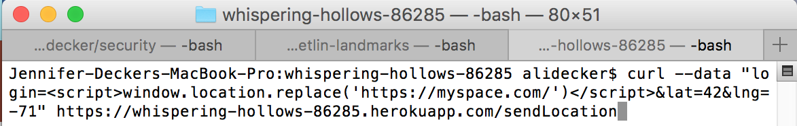
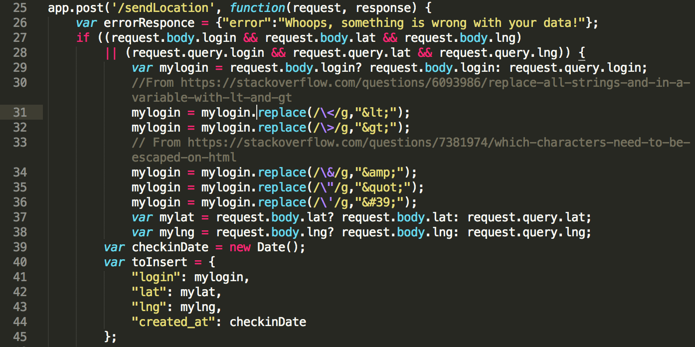

This paper presents the security weaknesses in the Landmark Locator website. The product analyzed is a web application that gets the user's current location, sends it to a database for storage and processing, and then displays the locations of other users and nearby landmarks on a map. This web application also calculates the nearest landmark to the user and, upon clicking on the user's icon, displays a line between the user's icon and this landmark. The database used is MongoDB, and the map is made using the Google Maps API.
First, the client side sites (Landmark Locator and https://whispering-hollows-86285.herokuapp.com/checkins.json) were examined and toyed with in Google Chrome. Second, the client-side code (index.html) was examined and analyzed. Lastly, the server code (index.js) was examined and toyed with using curl on the command line. Throughout this process, online articles were consulted to gain exposure and understanding about web security issues (see References section).
Overall, this web application has been deemed unsafe for the following reasons (as named in OWASP's Top 10 of 2017):
Solutions consist of disallowing or replacing special characters so that a user cannot unlock unwanted behavior such as site redirection, data collection, and data access.
On the checkins page, the user can type a query string requesting to see any checkin not equal to a particular username. This could result in a data breach, since the user could see the checkins of users - their usernames, locations, and times visited - that they are not authorized to see. Also, as presented in the video below, a nefarious checkin (e.g., a login that is actually JavaScript - see 2. Database Injection) could redirect the user to an unwanted place or gather their information and store it in an unwanted place.
This issue is of high severity for two reasons:
The solution is not to allow the user to type '[$ne]' into the query string. We can use the module "mongo-sanitize" to disallow this, as described in the screenshot below from NoSQL Injection in MongoDB.
Since index.js does not check that the login is legitimate (e.g., that it contains only alphanumeric characters, or that it is below a certain character length), a user could send JavaScript code as the login. This would then be executed by the page whenever that login should be displayed on the page.
To test this, I added a checkin to MongoDB using curl in the command window. The login field is JavaScript code that redirects to the MySpace homepage.

Here it is saved in MongoDB:
When you click on this new entry on the Landmark Locator page (index.html), the info window shows no login, and the page does not redirect to MySpace. It likely does not read the login as code in the map because the Google Maps API has safeguards against this for their info windows.
When you visit the checkins page (https://whispering-hollows-86285.herokuapp.com), however, the site does read the new login as JavaScript, execute it, and thus redirect you to MySpace.
This issue is of high severity because it would allow a user to redirect other users to a nefarious site, thus giving them viruses or something similarly bad. Besides redirection, other code could be injected to do other bad things, such as collect user information and send it to an undesirable place.
The solution is to replace special characters with their HTML encoded counterparts (e.g., '<' will become '<'). This way, what the user originally typed will be displayed, but it will not be executed as code.

POST /sendLocation does not check that the user entered a legitimate latitude nor longitude. However, the Google Maps API will display only legitimate coordinates; thus, if the coordinates are not legitimate, the user's position will not appear on the map and an error will ensue.
To test this, I used curl to check in someone at latitude and longitude values that are strings. The response in the command window was an error message, yet my entry did save to MongoDB and show in the checkins page (see below images, in which I sent the data twice). In Landmark Locator, no errors showed in the console and nothing strange printed to the screen.
This issue is of high severity for two reasons:
The solution is to check for legitimate latitude and longitude values. One way to do this is to use the "validator" module to ensure that the coordinates are legitimate, and then to convert the coordinates to floats.
As Tufts University professor Ming Chow would say, "Never trust user input." This particular analysis has focused on the case of the expert user hacking into a website in ways that the website did not originally intend, for purposes that the website should not permit. Landmark Locator showed potential for broken access control, sensitive data exposure, injection, and cross-site scripting. Overall, the solution is to think like the hacker: what characters would a hacker need for their entry to be executed as code, for example? Well, if we disallow those characters, then that entry cannot be read as code and executed. The moral of the story is to think about your own work with the critical eye of a hacker looking to do no good.
Go to Top